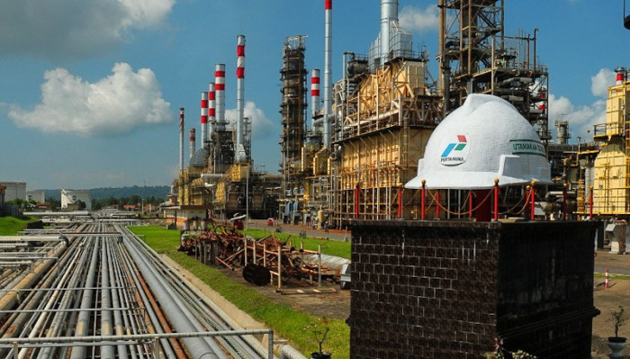
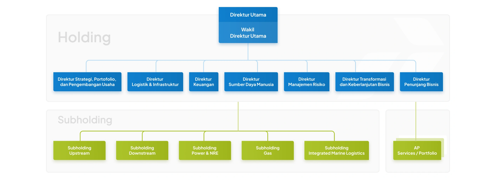

Pertamina senantiasa memegang teguh komitmen untuk menyediakan energi dan mengembangkan energi baru dan terbarukan dalam rangka mendukung terciptanya kemandirian energi nasional. Memegang amanah sebagai holding company di sektor energi sejak ditetapkan oleh Kementerian BUMN Republik Indonesia pada tanggal 12 Juni 2020, Pertamina kini memiliki peran sangat strategis yang membawahi lima Subholding yang bergerak di bidang energi (jenis kegiatan usaha), yaitu Upstream Subholding yang secara operasional dijalankan oleh PT Pertamina Hulu Energi, Downstream Subholding yang dijalankan oleh PT Pertamina Patra Niaga, Gas Subholding yang dijalankan oleh PT Pertamina Gas Negara, Power & NRE Subholding yang dijalankan oleh PT Pertamina Power Indonesia, serta Integrated Marine Logistics Subholding yang dijalankan oleh PT Pertamina International Shipping.
Peran penting yang diemban oleh Pertamina ini sekaligus menandai tonggak sejarah baru dalam perjalanan bisnis perusahaan setelah kontribusi nyata yang diberikan oleh Pertamina selama lebih dari enam dekade menyediakan energi yang telah menggerakkan sendi-sendi kehidupan bangsa Indonesia dan berbagai wilayah di luar negeri.
Kemampuan Pertamina yang mumpuni ini dibangun di atas fondasi yang solid dan sejarah panjang perusahaan dalam mengawal terwujudnya kemandirian energi nasional. Sejarah mencatat bahwa eksistensi Pertamina dibangun sejak sekitar tahun 1950-an, ketika Pemerintah Republik Indonesia menunjuk Angkatan Darat yang kemudian mendirikan PT Eksploitasi Tambang Minyak Sumatera Utara untuk mengelola lading minyak di wilayah Sumatera. Kemudian perusahaan tersebut berubah nama menjadi PT Perusahaan Minyak Nasional, disingkat PERMINA, pada tanggal 10 Desember 1957 yang hingga kini diperingati sebagai hari lahirnya Pertamina.
Pada tahun 1960, PT Permina berubah status menjadi Perusahaan Negara (PN) Permina. Kemudian, PN Permina bergabung dengan PN Pertamin menjadi PN Pertambangan Minyak dan Gas Bumi Negara (Pertamina) pada 20 Agustus 1968.
Selanjutnya, peran Pertamina semakin strategis setelah Pemerintah melalui UU No.8 tahun 1971 menunjuk perusahaan untuk menghasilkan dan mengolah migas dari lading ladang minyak serta menyediakan kebutuhan bahan bakar dan gas di Indonesia. Kemudian melalui UU No.22 tahun 2001, pemerintah mengubah kedudukan Pertamina sehingga penyelenggaraan Public Service Obligation (PSO) dilakukan melalui kegiatan usaha.
Berdasarkan PP No.31 Tahun 2003 tanggal 18 Juni 2003, Perusahaan Pertambangan Minyak dan Gas Bumi Negara berubah nama menjadi PT Pertamina (Persero) yang melakukan kegiatan usaha migas pada Sektor Hulu hingga Sektor Hilir. PT Pertamina (Persero) didirikan pada tanggal 17 September 2003 berdasarkan Akta Notaris No.20 Tahun 2003. Pada tanggal 10 Desember 2005, Pertamina mengubah lambang kuda laut menjadi anak panah dengan warna dasar hijau, biru, dan merah yang merefleksikan unsur dinamis dan kepedulian lingkungan.
Lalu pada tanggal 20 Juli 2006, PT Pertamina (Persero) melakukan transformasi fundamental dan usaha perusahaan dengan mengubah visi perusahaan, yaitu “menjadi perusahaan minyak nasional kelas dunia“.
Selanjutnya pada tanggal 10 Desember 2007, Pertamina melalui anak usaha PT Pertamina International EP mencatat momentum penting melalui aksi akuisisi terhadap perusahaan migas Prancis, Maurel et Prom (M&P), dengan kepemilikan saham sebesar 72,65% saham.
Kemudian tahun 2011, Pertamina menyempurnakan visinya, yaitu “menjadi perusahaan energi nasional kelas dunia“. Melalui RUPSLB tanggal 19 Juli 2012, Pertamina menambah modal ditempatkan/disetor serta memperluas kegiatan usaha Perusahaan.
Pada 14 Desember 2015, Menteri BUMN selaku RUPS menyetujui perubahan Anggaran Dasar Pertamina dalam hal optimalisasi pemanfaatan sumber daya, peningkatan modal ditempatkan dan diambil bagian oleh negara serta perbuatan-perbuatan Direksi yang memerlukan persetujuan tertulis Dewan Komisaris. Perubahan ini telah dinyatakan pada Akta No.10 tanggal 11 Januari 2016, Notaris Lenny Janis Ishak, SH.
Pada tahun 2017, Pertamina semakin dekat pada terwujudnya visi menjadi perusahaan energi nasional kelas dunia setelah berhasil menuntaskan akuisisi saham perusahaan migas Prancis, Maurel et Prom (M&P). Maka dengan keberhasilan tersebut, terhitung mulai 1 Februari 2017 melalui anak usaha PT Pertamina International EP, Pertamina menjadi pemegang saham mayoritas M&P dengan 72,65% saham. Melalui kepemilikan saham mayoritas di M&P, Pertamina memiliki akses operasi di 12 negara yang tersebar di 4 benua. Pada masa mendatang, Pertamina menargetkan produksi 650 ribu BOEPD (Barrels of Oil Equivalents Per Day) di 2025 dari operasi internasional, sebagai bagian dari target produksi Pertamina 1,9 juta BOEPD di 2025, dalam upaya nyata menuju ketahanan dan kemandirian energi Indonesia.
Bahkan setelah evolusi bisnis yang dialami selama enam dekade itu, Pertamina berkomitmen untuk tetap menggaungkan semangat transformasi yang berkelanjutan guna menyempurnakan langkahnya menjadi perusahaan energi berkelas dunia yang didukung oleh organisasi yang semakin lincah, agresif, mudah beradaptasi dan fokus untuk pengembangan bisnis yang lebih luas. Dengan struktur perusahaan yang baru, Pertamina diharapkan akan mampu menghadapi dinamika bisnis di tahun-tahun mendatang dan menumbuhkan optimisme untuk selalu menciptakan peluang pertumbuhan baru yang menjanjikan melalui investasi dan optimalisasi bisnis sehingga Pertamina dapat terus tumbuh sesuai dengan harapan pemegang saham dan seluruh pemangku kepentingan lainnya.

Menjadi perusahaan energi yang mengedepankan ketahanan, ketersediaan dan keberlanjutan energi.
Pertamina berkomitmen untuk menjadi perusahaan energi berskala global yang tidak hanya menjalankan kegiatan usaha dengan landasan komersial yang kuat, tetapi juga berperan strategis dalam mendukung kepentingan energi nasional, khususnya dalam memperkuat ketahanan, memastikan ketersediaan, serta mendorong keberlanjutan energi.
Menyediakan energi melalui solusi inovatif yang memberi nilai tambah untuk masyarakat.
untuk menyediakan energi melalui solusi inovatif yang memberi nilai tambah bagi masyarakat mencerminkan komitmen perusahaan dalam menghadirkan layanan energi yang andal, berkelanjutan, dan relevan dengan dinamika perkembangan industri nasional dan global. Upaya tersebut dilakukan melalui fokus usaha pada pilar dual-growth strategy, yaitu Maximizing Legacy Businesses dan Building Low Carbon Businesses. Pilar Maximizing Legacy Busineses fokus pada peningkatan produksi minyak & gas, penguatan bisnis di sektor hilir, penguatan pasar non-captive serta pengembangan infrastruktur transmisi & distribusi energi. Sedangkan pilar Building Low Carbon Businesses fokus pada pengembangan geothermal, ekosistem biofuel, green energy, dan low carbon technologies.
Pertamina menjalankan bidang penyelenggaraan usaha energi yang terintegrasi mulai dari hulu hingga hilir. Dalam kapasitasnya sebagai holding company di bidang energi sesuai Keputusan Menteri BUMN tanggal 12 Juni 2020, maka secara umum fokus bisnis Pertamina Grup adalah menjalankan kegiatan pengelolaan portofolio dan sinergi bisnis di seluruh Pertamina Grup, mempercepat pengembangan bisnis baru, serta menjalankan program-program nasional. Sementara itu, sejumlah kegiatan yang sebelumnya merupakan kegiatan-kegiatan bisnis utama perusahaan akan dijalankan oleh subholding yang telah terbentuk. Subholding ini akan menjalankan peran, antara lain mendorong terwujudnya operational excellence melalui pengembangan skala dan sinergi masing-masing bisnis, mempercepat pengembangan bisnis dan kapabilitas bisnis existing serta meningkatkan kemampuan dan fleksibilitas dalam kemitraan dan pendanaan yang lebih menguntungkan perusahaan. Berikut pemetaan peran subholding dari Pertamina Grup:

Pertamina juga menjalankan fungsi logistik dan infrastuktur dengan melalukan pengelolaan jaringan distribusi BBM dan LPG yang terpadu di seluruh Indonesia. Pertamina juga memiliki sejumlah anak perusahaan lainnya yang bergerak di berbagai sektor bisnis terkait keuangan dan jasa, yaitu antara lain PT Pertamina Bina Medika, PT Seamless Pipe Indonesia Jaya, PT Asuransi Tugu Pratama Indonesia Tbk (Tugu Insurance), PT Pertamina Pedeve Indonesia, PT Patra Jasa, PT Pertamina Training & Consulting, dan PT Pelita Air Service. Melalui pembentukan struktur baru Pertamina ini, Pertamina diharapkan akan mampu bergerak lebih lincah (agile), fokus dan lebih cepat dalam mengembangkan kapabilitas bisnis yang setara dengan kualitas kelas dunia guna mengakselerasi beragam inovasi di luar rantai bisnis konvensional Pertamina, antara lain dalam bidang energi baru dan terbarukan, bahan bakar nabati serta teknologi digital, sehingga Pertamina mampu meraih pertumbuhan skala bisnis yang lebih besar sebagai fundamental menuju perusahaan global energi yang terdepan.